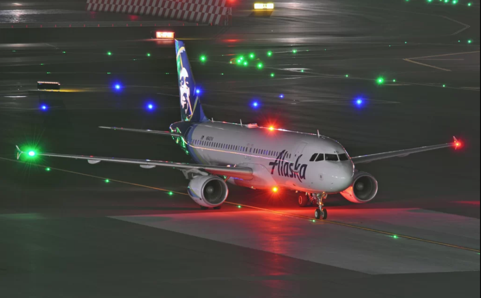
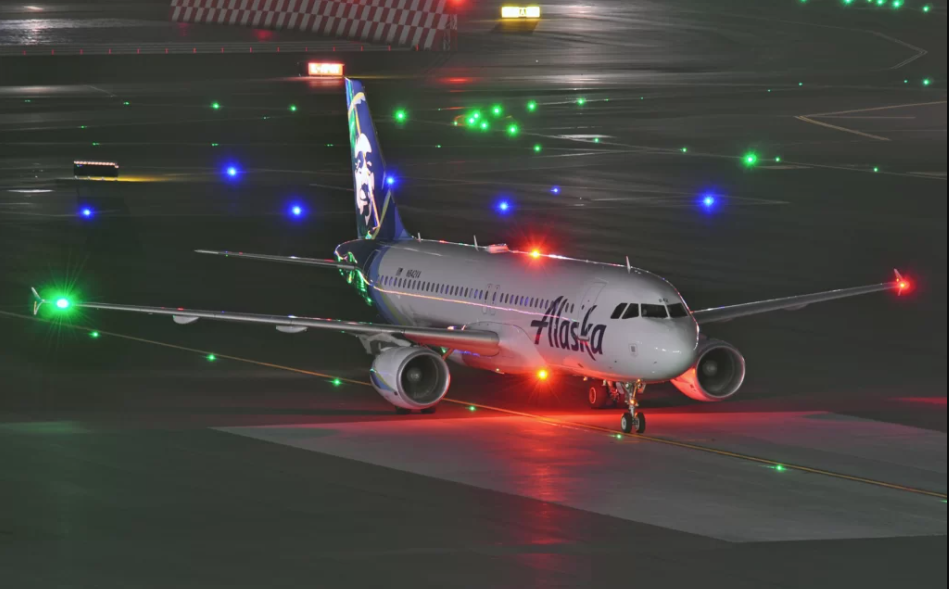

Trainee: Mr. Krish, I keep hearing about FOD checks. What exactly is FOD?
Instructor: FOD stands for Foreign Object Debris. Basically, anything that shouldn’t be on the ramp—stones, plastic, tools, even an old boarding pass blowing in the wind.
Trainee: Seriously? That stuff can cause problems?
Instructor: Absolutely. One loose bolt can turn into a flying bullet once an engine fires up. FOD may be small, but it plays dirty.
Trainee: What about a sandwich wrapper? That sounds harmless!
Instructor: Tell that to an engine sucking it in at full throttle. That "harmless" wrapper could cost millions. FOD may be small, but its impact? Huge.
Trainee: what about water bottle?
Instructor: Yep. One bottle sucked into a jet engine and boom—cha-ching! That’s one very expensive drink.
Trainee: Got it. So when do we check for FOD?
Instructor: Three times: pre-arrival, pre-departure, and post-departure. Think of it like a safety checklist—we check, then check again, then check after we’ve checked.
Trainee: And who’s responsible for that?
Instructor: Everyone at the bay. No exceptions. If you’re breathing ramp air, you’re part of the FOD squad.
Trainee: Alright! What should I be looking for exactly?Instructor: Anything that doesn’t belong—bolts, tools, plastics, lost items. If you wouldn’t want it flying into a jet engine, it’s FOD. When in doubt, pick it out!
Trainee: Got it, Mr. Krish,! Eyes down, pockets empty, ramp clean!
Instructor: That’s the spirit! A clean ramp is a safe ramp. Let’s keep the jets happy—and off the snack diet!
Trainee: Okay! And what do we do with the stuff we find?
Instructor: Straight into the FOD bin. Every bay has one. Can’t miss it—it’s the bin that’s practically begging for attention.
Trainee: And if the bin’s not there?
Instructor: Head over to the passenger ramp—we’ve got an FOD bin there too. No excuses. The only thing flying should be the aircraft, not garbage.
Trainee: Copy that, Mr. Krish,! FOD in the bin, not in the engine!
Instructor: Now you’re talking! Clean ramp, safe skies—that’s how we roll.


 
